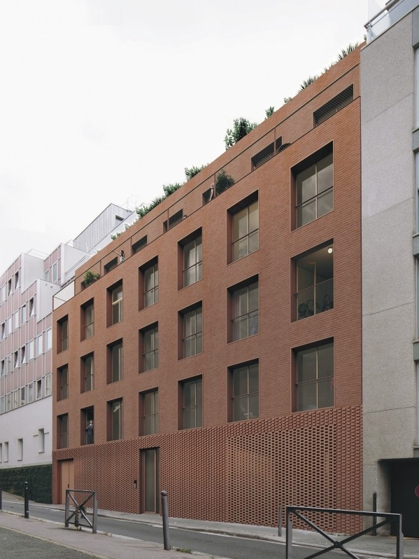
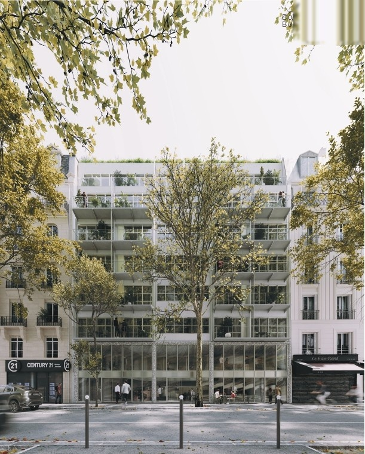
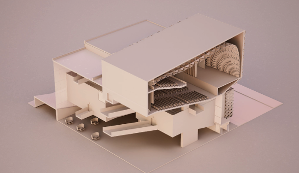

Work
Places already alive. Selected professional and research work across Paris, Casablanca, Tokyo, and Tunisia: careful rehabilitation, civic infrastructure, housing, cultural programs, and the reuse of existing places.
A compact index of rehabilitation, infrastructure, housing, civic interiors, and research, moving from professional practice in Paris and Casablanca to award-winning thesis work in Tunisia. 12 works / 2022-2026
Project register
Showing 12 of 12 projects
-
01

-
02

-
03

-
04

-
05

-
06

-
07

-
08

-
09

-
10

-
11

-
12

No projects match this filter.